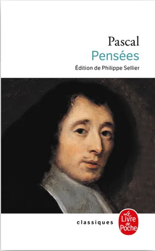
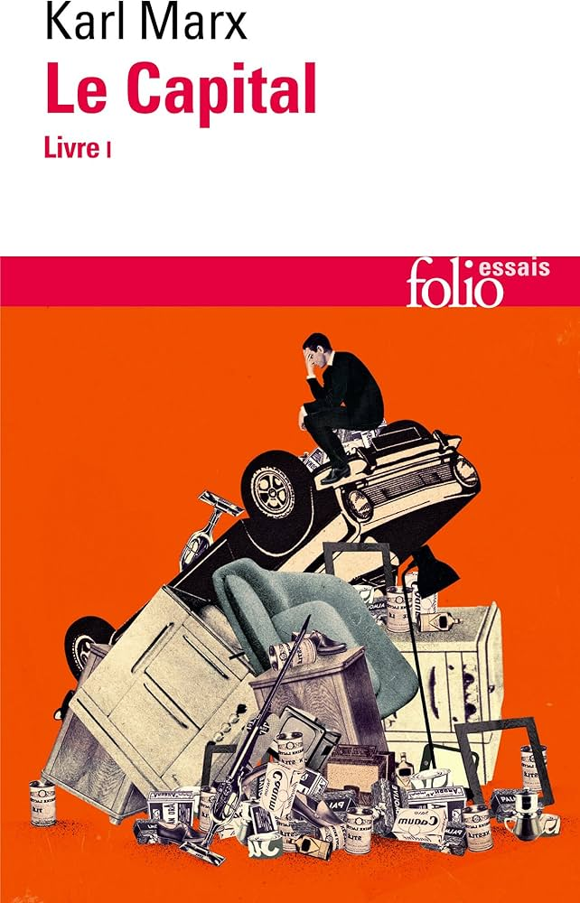
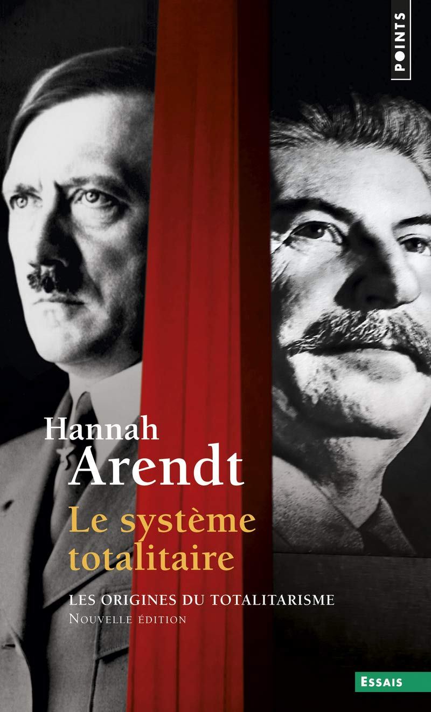
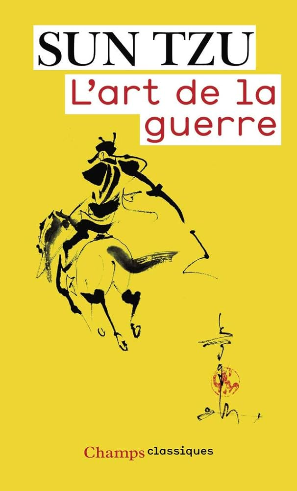

Eh oui, une de mes passions est de penser !
Quelques ouvrages philosophiques qui m'ont marqué :

Blaise pascal
Génie de la philosophie morale, des mathématiques, et pilier de ma pensée.

Karl Marx
Grand analyste du capitalisme et de ses défauts, mais surtout de ses limites...

Hannah
Arendt
Avec tocqueville, on a ici un des aboutissement de la pensée politique.

Sun Tzu
Grand stratège militaire, et pilier de la pensée et de la stratégie.
La dualité entre ame humaine et criminel
L'univers le plus riche qui m'est été donné de voir